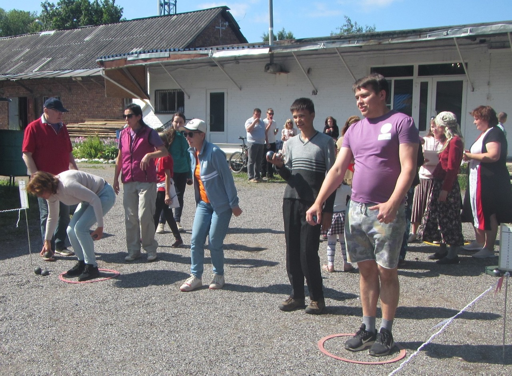

Семьям в трудной ситуации
Помогаем малоимущим семьям, сиротам и людям в сложной жизненной ситуации продуктами, одеждой, предметами гигиены и бытовой химией.
С 1997 года
Пока дышу — надеюсь
МДЦ «Свет Надежды» ведёт свою деятельность с 1997 года и оказывает благотворительную помощь тем, кто особенно нуждается в поддержке, заботе и внимании.
Dum spiro, spero.

О центре
«Пока дышу — надеюсь» — девиз Международного детского центра «Свет Надежды». Центр ведёт свою деятельность с 1997 года.
Свою историю он начал в стенах Львовского дворца, где когда-то жил и творил добро князь А. Д. Львов. Здесь продолжила своё развитие традиция бескорыстной помощи и поддержки.
Сегодня «Свет Надежды» остаётся местом, где доброта, внимание и участие объединяют людей разных поколений.

Кому мы помогаем
МДЦ «Свет Надежды» оказывает комплексную благотворительную помощь тем, кто особенно нуждается в поддержке.
Помогаем малоимущим семьям, сиротам и людям в сложной жизненной ситуации продуктами, одеждой, предметами гигиены и бытовой химией.
Передаём специальную технику для развития и повседневной поддержки: инвалидные коляски, тренажёры и другие необходимые средства.
Оказываем заботу и внимание нуждающимся пенсионерам и инвалидам войны, помогая сохранять общение и поддержку в спокойной и доброжелательной обстановке.
Проекты и мероприятия
В этом разделе собраны реальные фотографии из жизни центра, которые отражают благотворительную работу и атмосферу встреч.

Фотографии и материалы о благотворительном мероприятии МДЦ «Свет Надежды».
Фотографии и краткая информация о работе центра и его благотворительных инициативах.

Событие из жизни центра «Свет Надежды», связанное с поддержкой детей, семей и пожилых людей.
Документы
В этом разделе собраны основные документы АНО МДЦ «Свет Надежды».
При необходимости, на основании официального запроса, АНО МДЦ «Свет Надежды» готова предоставить дополнительные документы, если это не противоречит законодательству Российской Федерации.
Контакты и реквизиты
Здесь собраны основные способы связи и официальные данные организации в одном аккуратном блоке.
Связаться с МДЦ «Свет Надежды» можно по телефону, электронной почте или через страницу во ВКонтакте.
Официальные регистрационные и банковские данные АНО МДЦ «Свет Надежды».